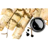

Correspondence Grimoire
Psoriasis
Type
Oils13

Birch Tar OilPsoriasis is a chronic autoimmune skin condition characterized by red, raised patches covered with silvery scaling, most often appearing on the elbows, knees, scalp, and lower back. Aromatherapy supports skin health, calms inflammation, and eases the itching and discomfort of flare-ups, though it is not a cure.
Always dilute essential oils well before applying to inflamed or broken skin, and patch-test before broader use. Avoid known irritants during active flare-ups, and stop use if redness or burning worsens. Consult a healthcare provider for severe or persistent psoriasis.
Suggested Application of Oils
- Massage: Blend 2 to 3 drops in a tablespoon of carrier oil and work gently into affected areas, avoiding broken or weeping skin.
- Skin oil/lotion: Add diluted oils (1 to 2 percent) to a fragrance-free carrier oil or unscented lotion for daily moisturizing.
- Flower water: Mist over the skin for cooling, calming relief between applications.
- Bath: Add 4 to 6 drops, blended first into a tablespoon of carrier oil or unscented bath base, to a warm (not hot) bath and soak.
Oils to Use to Address Psoriasis
 Calendula Infused Oil
Calendula Infused Oil Evening Primrose Oil
Evening Primrose Oil Jojoba Oil
Jojoba Oil German Chamomile Essential Oil
German Chamomile Essential Oil Angelica Seed Essential Oil
Angelica Seed Essential Oil Angelica Root Essential Oil
Angelica Root Essential Oil Bergamot Essential Oil
Bergamot Essential Oil- Birch Tar Oil
- Birch Bud Essential Oil
 Carrot Seed Essential Oil
Carrot Seed Essential Oil Virginian Cedarwood Essential Oil
Virginian Cedarwood Essential Oil Roman Chamomile Essential Oil
Roman Chamomile Essential Oil- Lavender Essential Oil